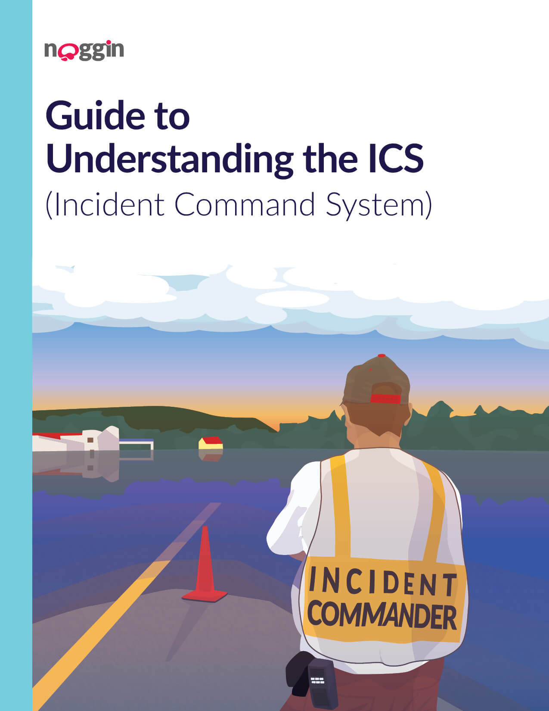
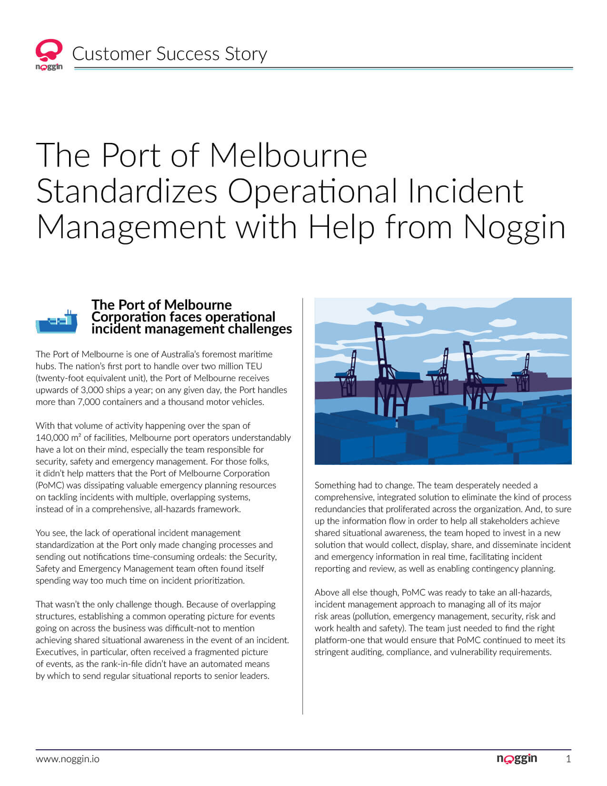
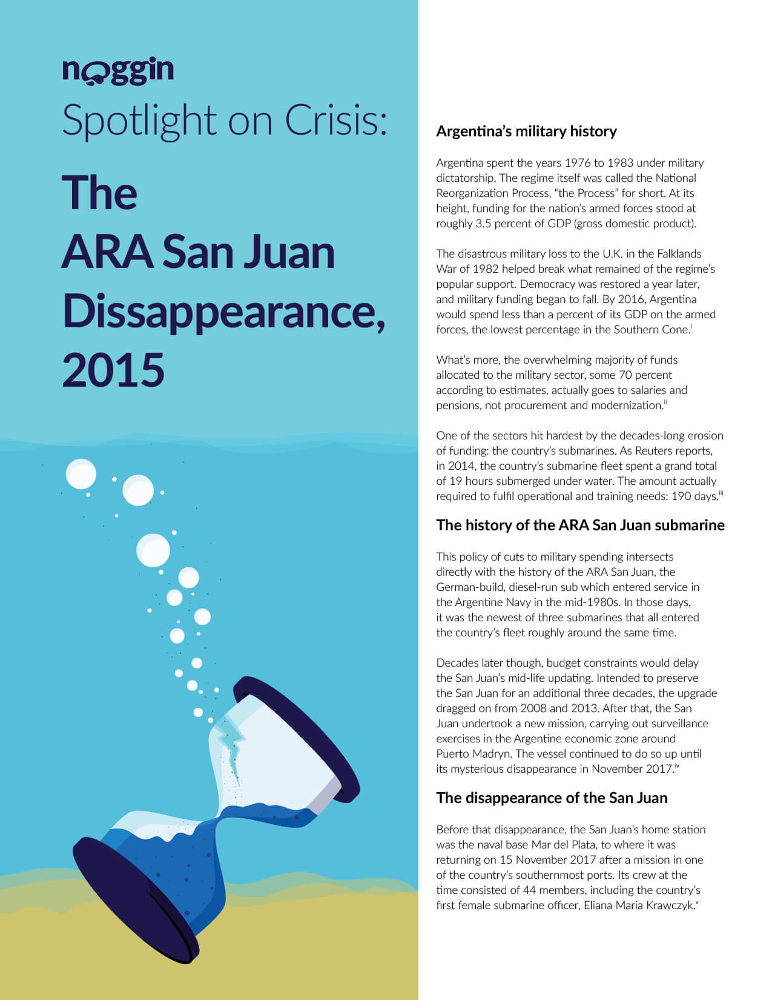
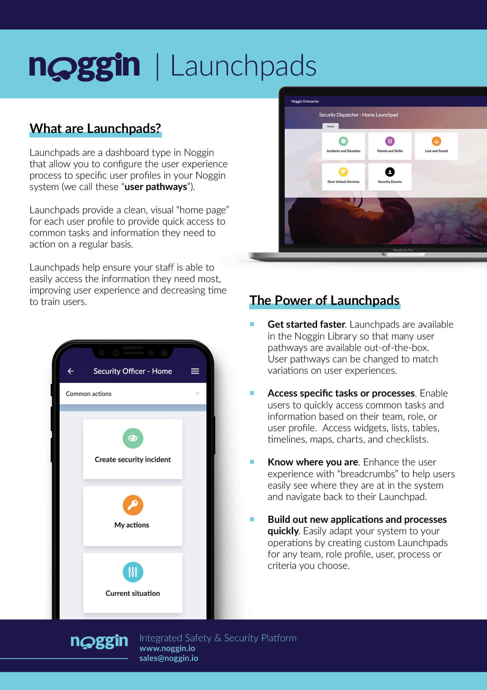
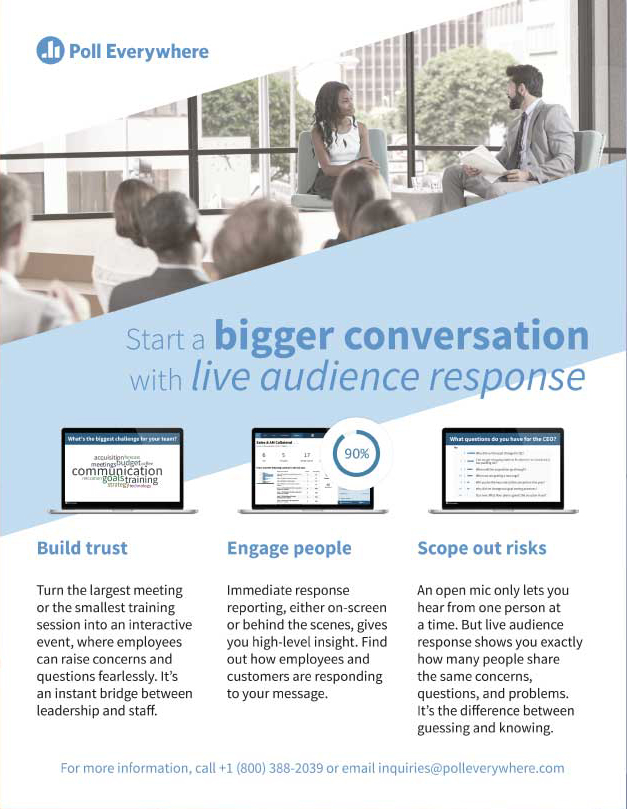
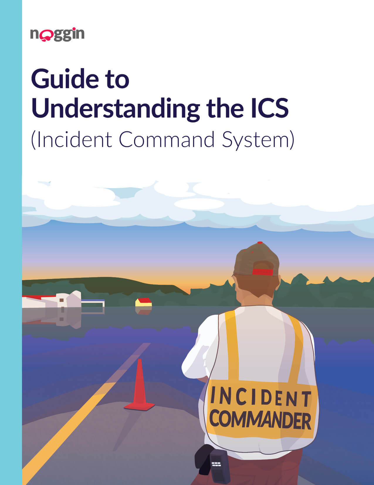
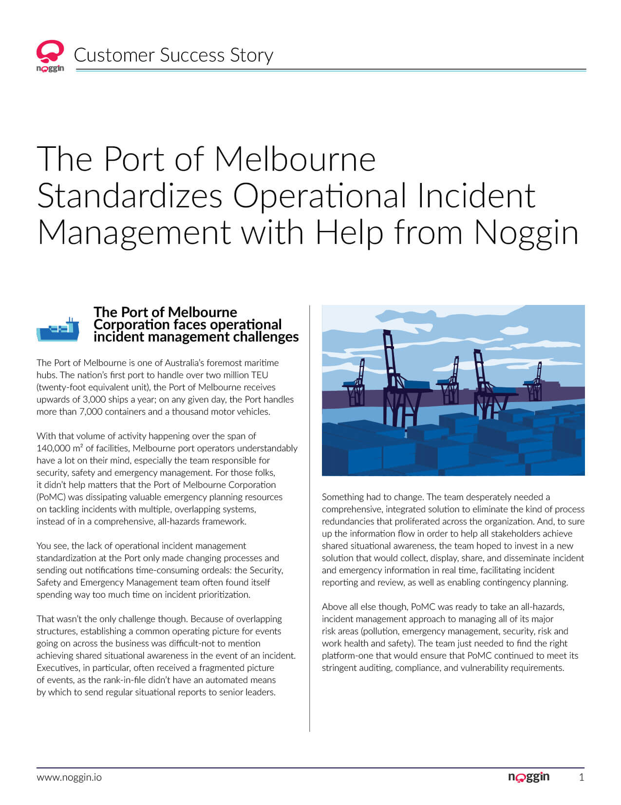
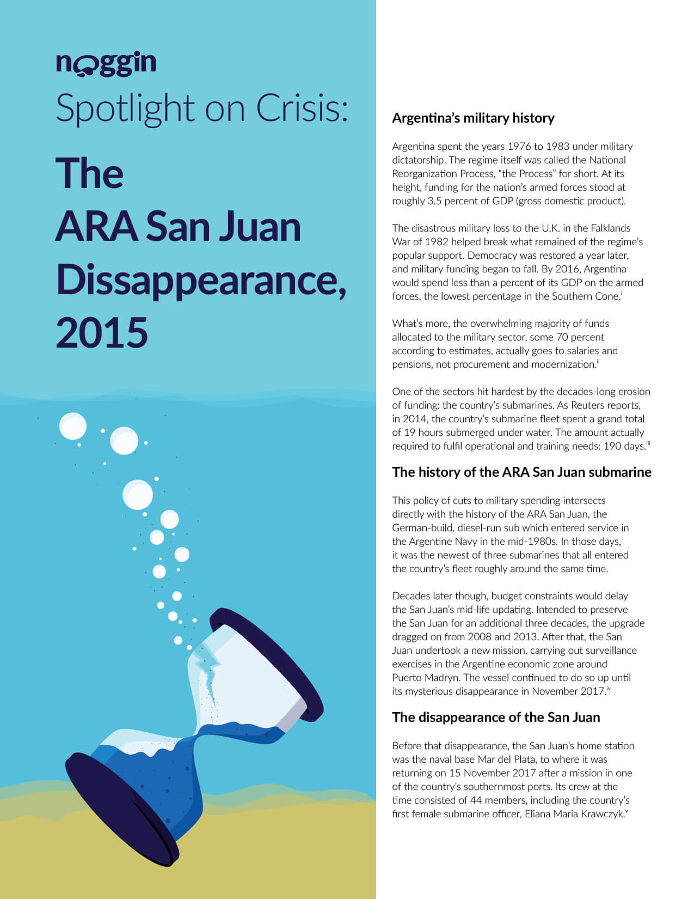
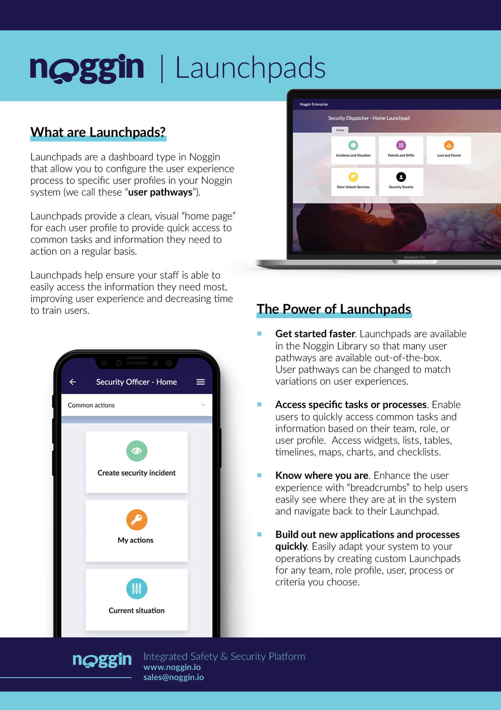
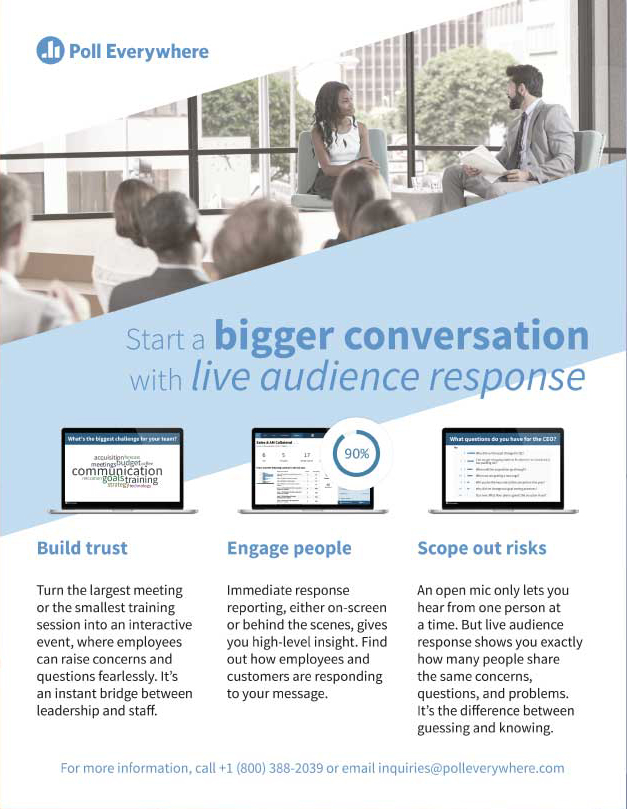

Examples of graphics
 










There are many areas of graphic design and I have probably made something for each of them. Most of my graphic experience is in a in-house environment and revolves around white papers, guides, conference materials, and sales collateral. Each piece requiring a specific objective, working with key stakeholders, and a deadline. Although I am no stranger to the unique request for schwag items or t-shirt designs.
Larger projects start with taking the given copy and working with the editor to best understand the message being conveyed. I then create a rough mock for review by stakeholders before creating a more final piece for approval. Depending on the importance there may be some user testing or additional stakeholder feedback sessions so the final piece can be it's best. Shorter projects usually don't require as much time or revisions and can be completed in a smaller timeframe. Every project is more or less bespoke and being flexible for the stakeholders is always a winning strategy.